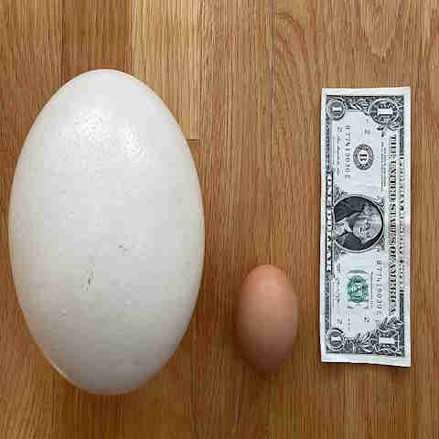
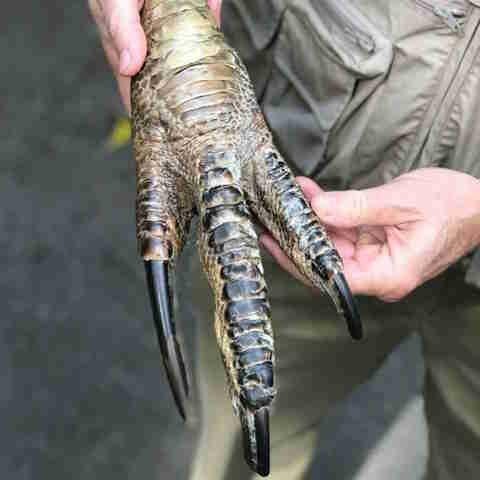
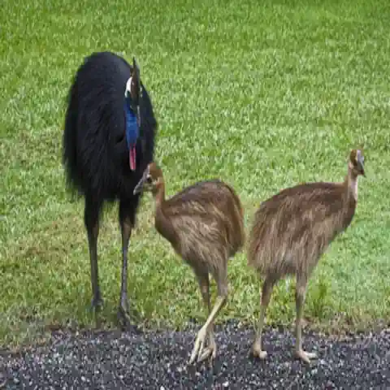
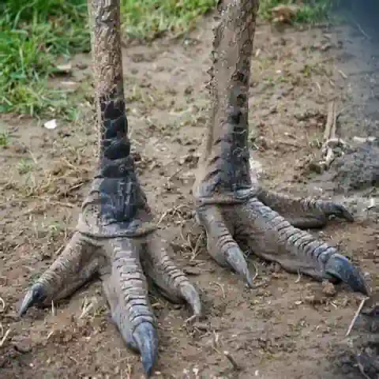
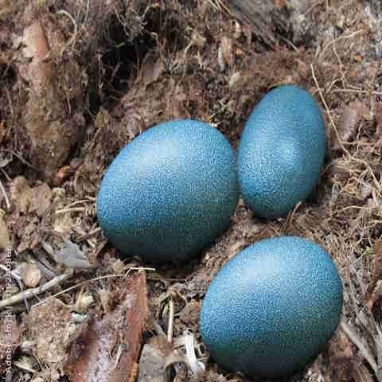
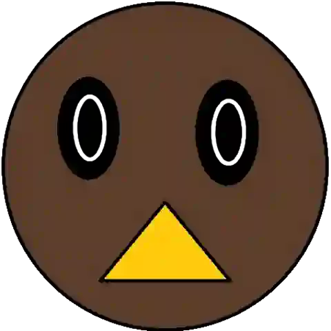
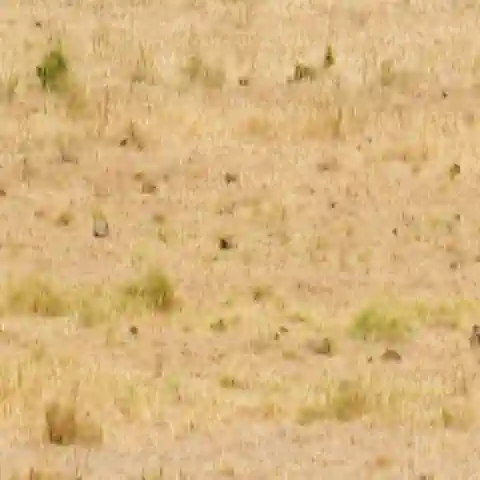

Common Ostriches are found only natively in Africa's wilds. Usually in somewhat arid environments like savannas or Sahei.
While the Somali Ostrich is found in the Horn of Africa, where it is isolated from the common ostrich in which it evolved to its own subspecies.
Biggest and heaviest current living bird species with the largest egg among current the living land animal.
Additionally despite their weight they can run at 70km/h making them the fastest land bird.
Humans are farming them and their leather are used as a lucrative commodity while their feathers are used for ceremonial headgears.
We eat their eggs and meat and use their fat to turn into ostrich oil which can be used as antioxidants or as a skincare product as it reduces inflammation.
Kiwi are only found in New Zealand. As of right now, current living species of kiwis are mostly endangered while some are in the vulnerable status.
They have the smallest eyes relative to their body mass compared to every other bird, giving them a poor vision. Due to that, they rely more on their other senses so much some species of the kiwi are outright blind.
Compared to their brethren from the palaeognath, they are more smarter than them. Smart enough to be like a parrot or songbirds although it has yet to be proven
Their eggs are the largest in proportion to body compared to every other bird which can damage their internal organs.
Due to the declining number of kiwis and the pests that exclusively attacks the kiwi, we made areas with active pest management to boost their survival rate as 5-10% of kiwi chicks die
About 5 Sanctuaries were made to protect them.
Casowary are the 3rd tallest and 2nd heaviest living bird, beaten out by ostriches and the emu. They are wary of other animals and when provoked, it can be capable to deal fatal injuries.
So capable of it they have been labelled as world's most dangerous bird. Despite the fact it stastical kills per year compared to an ostritch is lower.
Found in the deep forest, the are called shy and they are good at disappearing when they a human before said humans spot them. Due to this, it isnt well studied. Despite this, it common to see females being larger, brighter and heavier than the males. 2m, 70kg for females while males are 1.5-1.8m, 58.5kg.
Each of their toes are knives using it to inflict injuries against humans and animals.
 Normally most female animals care for their eggs whereas casowaries abandon them and continue in their territory while the males incubates the eggs ensuring the temperaature for the eggs are regulated.
Emus although being the 2nd tallest living bird, its only the 4th or 5th heaviest living birds as some casowary species were heavier than them.
Compared to its brethren, its a bird that flap its vestigal wings presumably to balance itself whilst running. Just like its the Casowary it too also has a deadly toe 

We not only foraged for their eggs, but also kill them for the meat and their fat. The fat was used as bush medicine and can be sed as lubricant for untensils and tools, mixing with ochre making paint for ceremonial body adornment
Which is also strange when how some countries made mythology where the sun was made by throwing an emu's egg in to the sky.
Other than the fact they won a war against Australia all because of them eating the farmers' crops. According to John Gould's handbook, Tasmanian emu were on the verge of enxtinction due to the emu killing peaking at 57k during the 1930s and still having bounties at 1960s.
They were then granted protection under Environment Protection and Biodiversity Conservation Act 1999. and in 1992 was then suggested that the emu population was around 630k-725k.
Despite the increased population, some areas were still risking enxtinction
ooo scary
Not submitted

